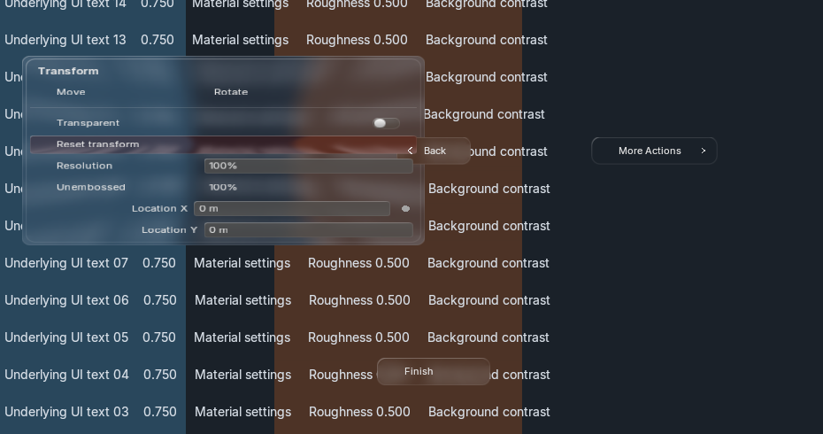
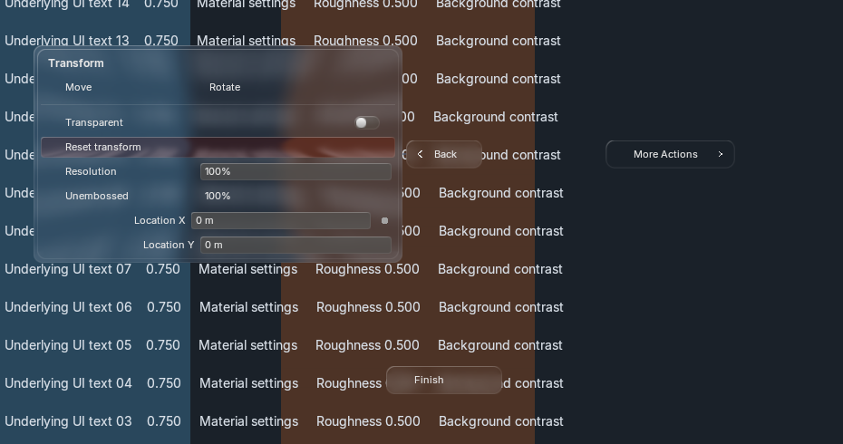
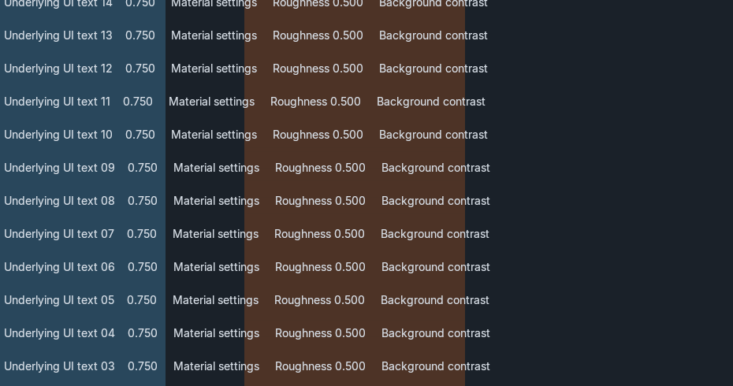

Actual Blender GPU captures · 30 October 2026 · BVT liquid glass, active theme colors and shared source springs.
Pie items pull and stretch as the pointer approaches. Entering the logical petal restores its resting shape immediately, including compound padding. Highlight and the origin guide remain. No additional row, field or switch hover squash is layered on top.


Layout.menu_pie() now authors a pie without a registered Menu class. The host opens it with logical coordinates and routes events through Canvas. Nested registered menus retain Back, exact owner actions and stale-owner checks.
Compound slots add alert tint, unembossed/status fields, split labels, optional animation decorators, initial text editing and default action selection. Decorators use real keyframe insertion/deletion on the exact component. All Boolean controls stay BVT switches.

| Blender / scale | Flags | Stable hover | Context | Narrow | Motion disabled |
|---|---|---|---|---|---|
| 5.2.2 / 1× | PNG | PNG | PNG | PNG | PNG |
| 5.2.2 / 1.5× | PNG | PNG | PNG | PNG | PNG |
| 5.2.2 / 2× | PNG | PNG | PNG | PNG | PNG |
| 5.1.2 / 1× | PNG | PNG | PNG | PNG | PNG |
235 unit tests, eight background Blender runs, four GPU captures and two native N-panel input runs passed. 144 animation frames matched byte-for-byte with Blender text batching on/off. All four hover/held PNG pairs are identical. Shared backdrop/strong-blur revisions, shaders, batches and fonts remained stable.
Compound CPU paint median 0.307 ms, p95 0.364 ms. Paired ordinary-list medians 0.129 ms before / 0.134 ms after. CPU submission only, with readback excluded; not GPU completion or full source-level performance acceptance.
Implementation evidence for your QA. Full native parity and exact generated-reference acceptance remain open. Narrow fallback does not preserve every inline relationship. Windowed tests all used --no-window-focus, but the focus audits recorded Blender activation; no deliberate activation or focus-restoration workaround was used.
Results and remaining gaps · Launches and source hashes · Combined focus audit · Versioned source evidence · Integration guide